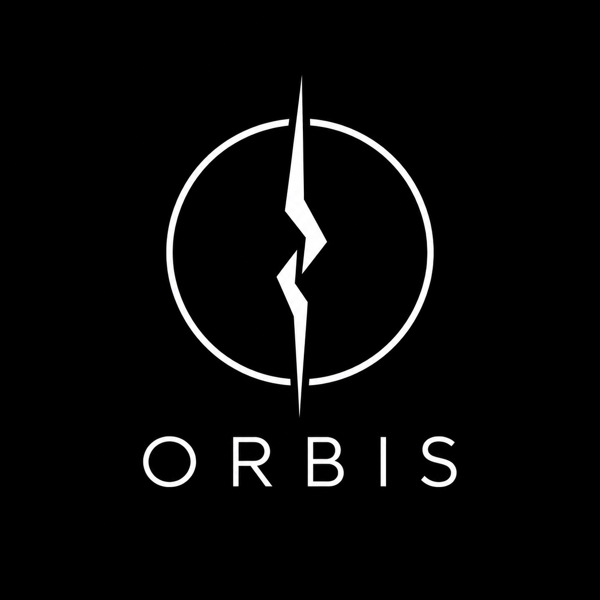

ORBIS / FIELD DOSSIER / 001
RIFT-ORIGIN CREATURES · ARCHIVE
균열 너머에서
무엇이 나타나는가.
크리쳐(Creature)는 균열에서 출현하거나 균열의 영향 아래 발견되는 미확인 개체를 통칭합니다. 기원과 행동 양상은 아직 하나의 기준으로 설명되지 않습니다.
ANOMALY / OBSERVATION
FIG. 01 — RIFT PHENOMENONVISUAL SIMULATION / NOT TO SCALE
01 / DEFINITION
크리쳐란?
정체는 아직 미확인. 그러나 대응 원칙은 명확합니다.
FIELD DEFINITION / 현장 통칭
“균열과 연관되어 관측된 미확인 개체.
형태와 지능, 공격성과 생태는 개체마다 다르며, 모든 크리쳐를 즉시 적대 대상으로 판단하지 않습니다.”
CONFIRMED개체별 특성 상이같은 형태라도 행동이 같다고 단정할 수 없음UNCONFIRMED기원 · 발생 원리관련 연구와 현장 관측이 계속 진행 중
02 / OBSERVATION CLASSES
ARCHIVE 03 / 03관측된 형태.
아래는 형태에 따른 편의상 분류 예시입니다. 위협도나 기원과는 별개입니다.
SELECTED OBSERVATION 01 / 03
인간형 관측 개체
신체의 기본 윤곽이 인간과 유사한 개체. 외형만으로 사고 능력, 의사소통 가능성 또는 적대성을 판정할 수 없습니다.
형태 구분HUMANOID
적대성개체별 판단
기원미확인
03 / FIELD PROTOCOL
PROTOCOL / 04 STEPS발견 이후, 네 단계.
확인되지 않은 개체에 대해서는 위험도를 평가한 뒤 대응 방식을 결정합니다.
STEP 01
이상 징후를 확인하고 관제 기록을 생성합니다. 현장 접근 전 주변 민간인과 환경의 안전을 우선 검토합니다.
DECISION MATRIX관찰격리구조제압※ 조치 방식은 위험도와 상황에 따라 결정
ORBIS / OPERATIONAL PRINCIPLE미확인은 곧
미확인은 곧
적대가 아니다.
크리쳐의 외형은 위협의 근거가 될 수 없습니다.
ORBIS의 판단 기준은 관측된 행동, 위험도, 그리고 현장 상황입니다.

END OF DOCUMENT / 001
세계관 기록으로 돌아가기 관련 기록을 더 살펴보시겠습니까?